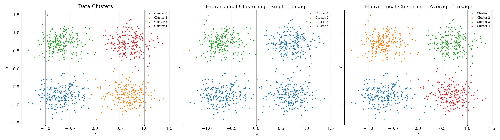
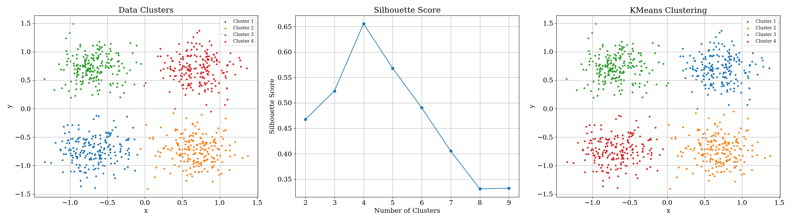
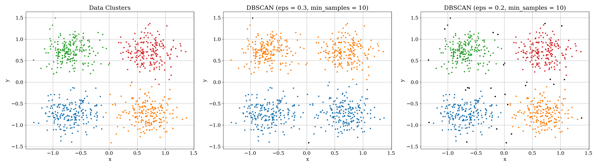

Hierarchical clustering is a method used to cluster data into a hierarchy of clusters. It creates a tree-like structure, called a dendrogram, by recursively merging or splitting clusters based on their similarity or dissimilarity. Such clustering algorithms do not rely on any parametric assumptions or prior knowledge of the clustering. The choice of metric, however, can significantly affect the clustering results. These algorithms can be broadly classified into two types: agglomerative and divisive hierarchical clustering.
Agglomerative hierarchical clustering starts by considering each data point as a separate cluster and then iteratively merges the closest clusters until only one cluster remains. The distance between clusters can be measured using various metrics such as Euclidean distance, Manhattan distance, or correlation.
Divisive hierarchical clustering starts with all data points in a single cluster and recursively splits them into smaller clusters until each data point is in its cluster. It involves selecting a cluster to split and determining the optimal way to divide it based on some criterion, such as maximizing the distance between resulting clusters.
Hierarchical clustering uses different linkage methods to measure the distance between clusters. Some common linkage methods include:
The choice of linkage method can significantly impact the clustering results, as different methods may lead to different cluster structures. Single linkage tends to produce elongated clusters, while average linkage tends to produce more spherical clusters.
A result of Hierarchical Clustering on four noisy gaussians is shown below:  One can see how single linkage clustering tends to produce elongated clusters - misclassifying the gaussians, while average linkage clustering tends to produce more spherical clusters - correctly classifying the gaussians upto a great extent.
K-means clustering is a popular unsupervised learning algorithm used to partition a dataset into a pre-defined number of clusters. It aims to minimize the within-cluster sum of squares, which measures the compactness of the clusters.
One of the challenges in K-means clustering is determining the optimal number of clusters, \( k \). Common methods for selecting \( k \) include the elbow method, silhouette score, and gap statistic.
K-means is sensitive to the initial choice of centroids, which can lead to different final clusterings. Therefore, it is common to run the algorithm multiple times with different initializations and select the clustering with the lowest within-cluster sum of squares.
A result of K-Means Clustering on four noisy gaussians is shown below:  The silhouette scores clearly show that the optimal number of clusters is 4, which is the true number of gaussians in the dataset.
Density-Based Spatial Clustering of Applications with Noise (DBSCAN) is a clustering algorithm that groups together closely packed points in high-density regions and marks points in low-density regions as outliers or noise.
A result of DBSCAN Clustering on four noisy gaussians is shown below:  As one can see, DBSCAN is able to effectively cluster the gaussians, but the results are very much dependent on the choice of \( \varepsilon \) and \( \text{minPts} \).
Linear Discriminant Analysis (LDA) is a dimensionality reduction and classification technique that seeks to find the linear combinations of features that best separate different classes in the data. LDA is similar to principal components analysis but with a different purpose: PCA finds linear combinations of the variables that sequentially explain the variance for the sample treated as a whole, while LDA finds combinations that efficiently separate classes within the sample.
Given a dataset with \( n \) observations and \( p \) features, where each observation belongs to one of \( k \) classes, LDA aims to find a linear transformation of the feature space that maximizes the separation between classes while minimizing the variance within each class.
Classification trees are a type of decision tree used for classification tasks. They recursively partition the feature space into subsets, with each partition corresponding to a decision or rule that classifies the data.
The most common type of classification tree is the Classification and Regression Tree (CART), which uses a binary tree structure to represent the decision rules. At each node of the tree, the algorithm selects the feature that best splits the data into two subsets, based on a criterion such as Gini impurity or information gain.
CARTs are constructed to minimize the inhomogeneity or impurity along branches. At node \(m\) of a tree, let \(P_j\) be the fraction of objects in the training set with class \(j\). Several measures of impurity are used: \[i(m) = \begin{cases} 1 - \max(P_j) & \text{Misclassification impurity} \\ P_jP_k & \text{Variance impurity} \\ -\sum_j P_j \log P_j & \text{Entropy impurity} \\ \frac{1}{2}\left[1 - \sum_j P_j^2\right] & \text{Gini impurity} \end{cases}\] At each node, the algorithm selects the feature and split point that minimize the impurity of the resulting child nodes. This process is repeated recursively until a stopping criterion is met, such as a maximum tree depth or minimum number of samples per leaf.
k-Nearest Neighbors (k-NN) is a simple and intuitive classification algorithm that classifies a data point based on the majority class of its nearest neighbors in the feature space.
The key parameter in k-NN is \( k \), the number of nearest neighbors to consider. Larger values of \( k \) lead to smoother decision boundaries but may increase bias, while smaller values of \( k \) may result in more flexible boundaries but could lead to overfitting.
Another important aspect of kNN and other distance-based algorithms is the choice of distance metric. The distance metric determines how the similarity between data points is calculated and can significantly impact the algorithm's performance. Some commonly used distance metrics include: